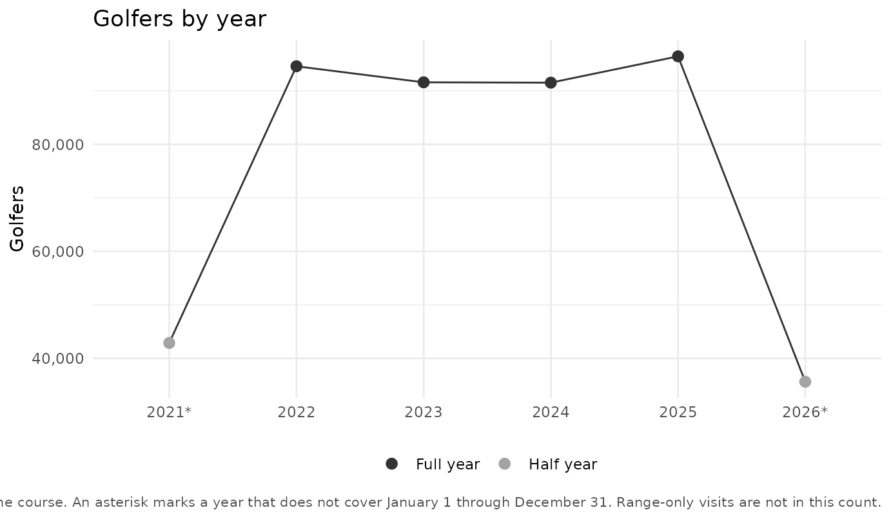
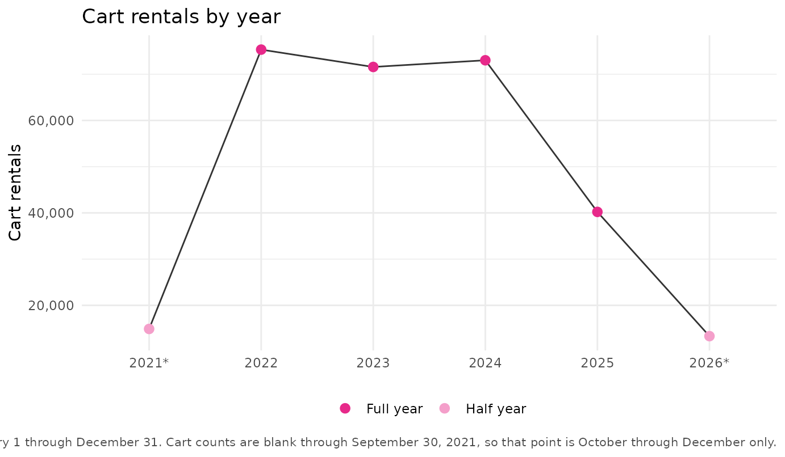
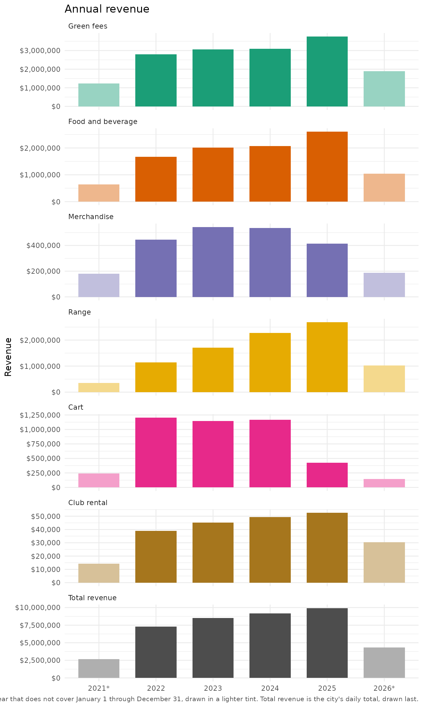
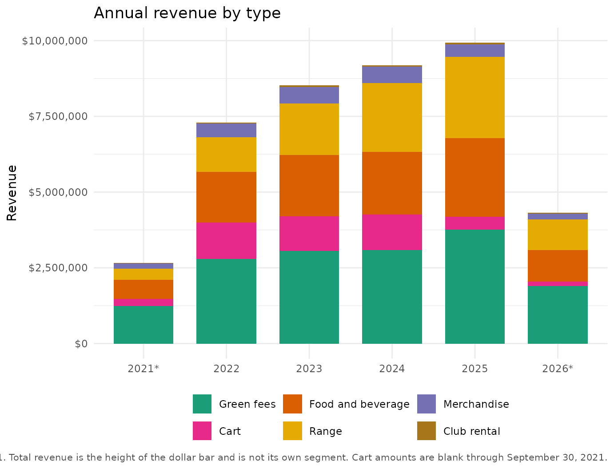
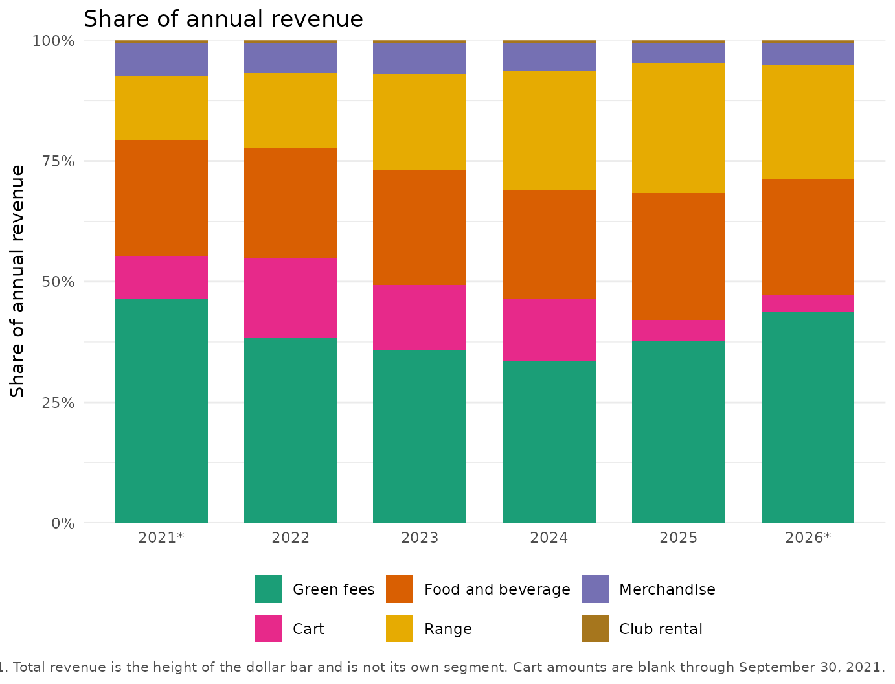
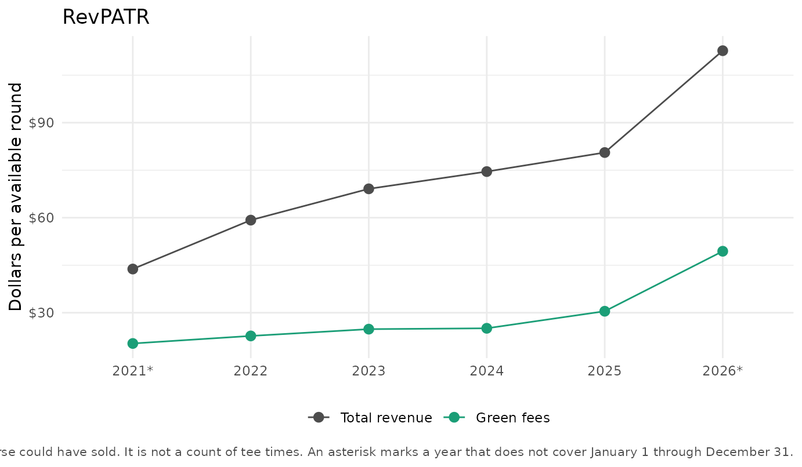

library(golfops)
sample <- dobson_operating_daily()Golfers
A round in the city file is one golfer who played the course. Someone who only used the range is not in that count. Range sales are recorded in dollars. The file has no count of range customers.
plot_annual_golfers(sample)
Cart rentals are a count of carts, not a count of golfers. The 2025 drop is fewer recorded rentals, not fewer rounds.
plot_annual_carts(sample)
Annual revenue
Each chart is one revenue type, in that type’s color. The bar is that year’s revenue. It is not dollars per golfer. Total revenue is the last chart. Pale bars are half years: 2021 is July through December, and 2026 is January through April.
plot_annual_revenue(sample)
Revenue mix
The charts above are one category at a time. Here the same six categories are stacked, and the height is the year’s revenue. Green fees are at the bottom, then cart, food and beverage, range, merchandise, and club rental. Total revenue is the full bar and is not drawn again. A half year is shorter because it covers fewer months. Dollars per golfer, on its own page, divides these amounts by golfers who played.
plot_annual_revenue_mix(sample)
The next chart is each category’s share of that year’s revenue. Cart’s share falls in 2025. Green fees stay the largest slice. Range’s share grows through 2024.
plot_annual_revenue_mix(sample, scale = "share")
RevPATR
RevPATR divides the year’s revenue by the rounds the course could have sold. Dollars per golfer divides by the golfers who played. In this file the available rounds are the city’s daylight estimate, including days with no golfers. The file has no tee time, so the denominator is that estimate.
| 2021* | 2022 | 2023 | 2024 | 2025 | 2026* | |
|---|---|---|---|---|---|---|
| Total revenue | 43.80 | 59.23 | 69.12 | 74.56 | 80.58 | 112.73 |
| Green fees | 20.29 | 22.67 | 24.82 | 25.08 | 30.47 | 49.41 |
plot_revpatr(sample)
The city file records daily total revenue, green fees, food and beverage, merchandise, range, cart rental, and club rental, along with golfers, from 2021-07-01 through the latest day in the extract. Food and beverage is one amount. Dining is not split from alcohol.
Mesa’s annual comprehensive financial report does not publish that split for Dobson Ranch either. The course’s restaurant and shop are run by a concessionaire. The daily open-data file is the source for these categories.
How those daily amounts move with the number of golfers is in Correlations and relationships. Which weekdays and months fill the daylight estimate, with October closures left out, is in Capacity and utilization.